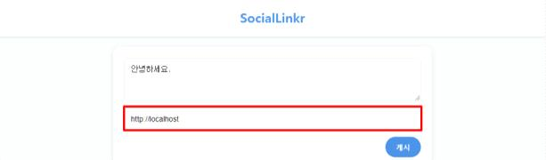
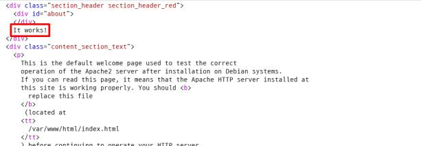
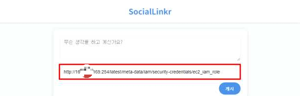
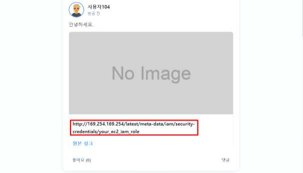
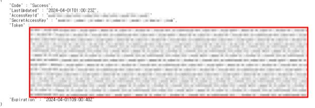

점검 목적
- 입력값을 통해 외부에서 직접적인 접근이 제한된 내부 서버 자원에 접근하여 악의적인 요청을 처리하거나 중요 정보의 유출 여부 점검
- 입력값 검증을 통해 내부 서버 자원에 대한 비인가 접근을 차단하여 중요 정보(개인정보, 금융 정보 등) 탈취, 데이터 변조, 임의 명령 실행 등 악의적인 행위를 방지하기 위함
보안 위협
- 서버 간 통신 시 입력값에 대한 검증이 미흡할 경우, 외부에서 접근이 제한된 내부 서버 자원에 대한 정보 수집, 중요 정보(개인정보, 금융 정보, 인사 정보 등) 탈취, 임의 명령 실행, 클라우드 환경 내 메타데이터 수집을 통한 네트워크 인프라 장악이 가능함
판단 기준
- 양호 : 외부 입력값이 화이트리스트 방식으로 검증되어, 허용된 URL 또는 IP 범위 내에서만 처리될 경우
- 취약 : 외부 입력값이 검증이 이루어지지 않고 처리되어 허용되지 않는 자원에 임의적인 접근 및 요청이 가능한 경우
조치 방법
- 입력값 검증 및 화이트리스트를 적용하여 허용된 URL과 IP주소만 접근 가능하도록 설정하며, 네트워크를 분리하여 내부 자원에 대한 비인가 접근을 차단
점검 방법
Step 1) 사용자 입력을 통해 서버 간 통신이 이루어지는 지점에서 허용되지 않은 주소값을 입력하여 응답, 지연 시간 등을 분석해 취약점 가능성 확인


Step 2) 습득한 정보를 바탕으로 우회 기법, 포트 스캔, 내부 정보 탈취 등 익스플로잇 시도 및 영향 평가



조치 방법
1. 외부 요청에 대해 허용된 URL이나 IP주소를 화이트리스트로 정의하여 허용된 대상에만 접근이 가능하도록
설정
2. 내부 네트워크 대역 및 관리용 포트에 대한 요청을 감지하고 차단
3. URL 접근에 실패할 경우 사용자에게 에러 정보나 응답값을 노출하지 않고, 일반적인 에러메시지 출력
4. http, https 외의 다른 프로토콜 (FTP, SMB, SMTP 등)과 URL 스키마(file://, gopher://, data://, dict:// 등)에
대한 접근을 차단해야 하며, 내부 호스트명이 외부에 노출되지 않도록 DNS 설정을 조정
5. 애플리케이션 서버와 중요 내부 시스템간 네트워크 분리를 통하여 불필요한 통신을 제한하여 권한 없는 접근
과 외부로부터의 직접적인 접근을 방지